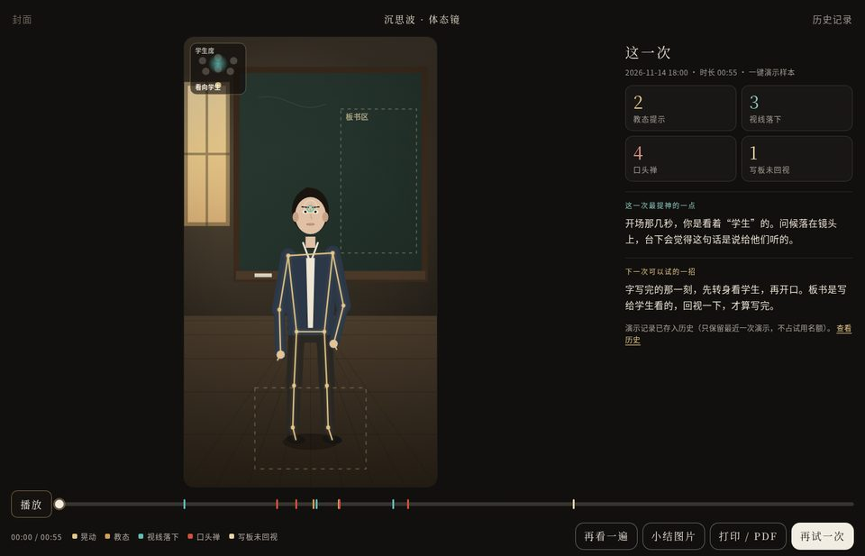

摆放
电脑放在讲台或第一排课桌上，镜头大致与胸部齐平或略低，不要俯拍。光线从正面或侧前方来，避免逆光和强光打在黑板上。
师范生试讲 · 课堂训练
对着镜头讲一段课。教态、视线、口头禅和写板后的回视，会像运动训练一样，直接画在画面上。讲完可以回放，转写里的水词也会标出来。
练习模式几分钟即可。也可以把电脑放在讲台或课桌上，讲上 10 到 20 分钟再回看。

不必另买设备。用教室里那台笔记本的摄像头就可以。
电脑放在讲台或第一排课桌上，镜头大致与胸部齐平或略低，不要俯拍。光线从正面或侧前方来，避免逆光和强光打在黑板上。
半身：腰部以上完整进入画面，距离大约一到两米。全身：再退远一些，或把镜头放到教室侧前方，从头到脚都能看见。
选择「课堂」模式，建议 10、15 或 20 分钟。讲完后在同一台电脑上回放：时间线上有标记，转写里的水词会标出，也可以写下自己的批注。
详细的摆放、光线和常见问题，见使用说明里的「课堂摆放」。
两种构图都支持，可以指定，也可以开讲后由画面自动判断。
电脑就放在讲台上。看得到视线是否落在讲稿上、肩膀是否晃、写板后有没有回看学生。适合日常对着镜头练，也适合大多数教室的讲台位置。

镜头再远一些，或放在侧前方。看得到站位、步伐，以及写板书时会不会整个人背对学生。适合微格教室，或请同伴把手机架在稍远的地方。
体态镜不是一堂课的评分表，而是讲完之后用来回看的镜子。时间线上会标出晃动、视线落下、口头禅、写板未回视等时刻；旁边是两句具体的话——这一次里值得留下的，和下一次可以试的一招。
转写会整段留下来，词表里的水词用记号标出，点某一句就能跳到那里。历史留在这台设备上，可以和上一次对比。
教师资格证面试、教学技能大赛、微格课之前，对着镜头把一段课讲完，再自己看一遍。练习模式短，方便反复练同一处。
把电脑放在讲台上，完整讲一节里的一段，课后回看站位、视线和口头禅。也可以请教研组的同事一起看回放，在时间线上讨论。
画面来自单个摄像头的估计，受光线和构图影响，只作训练提示，不是精确测量，也不是心理或医学评估。视频默认不上传；体验计划需主动参加，默认关闭。